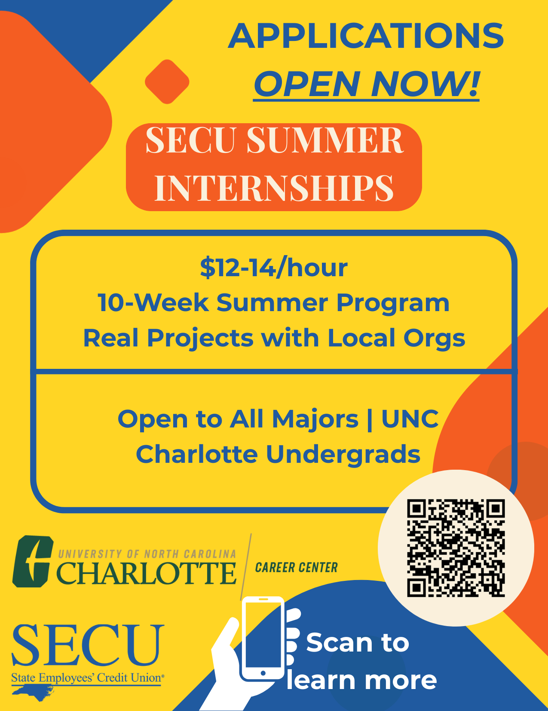
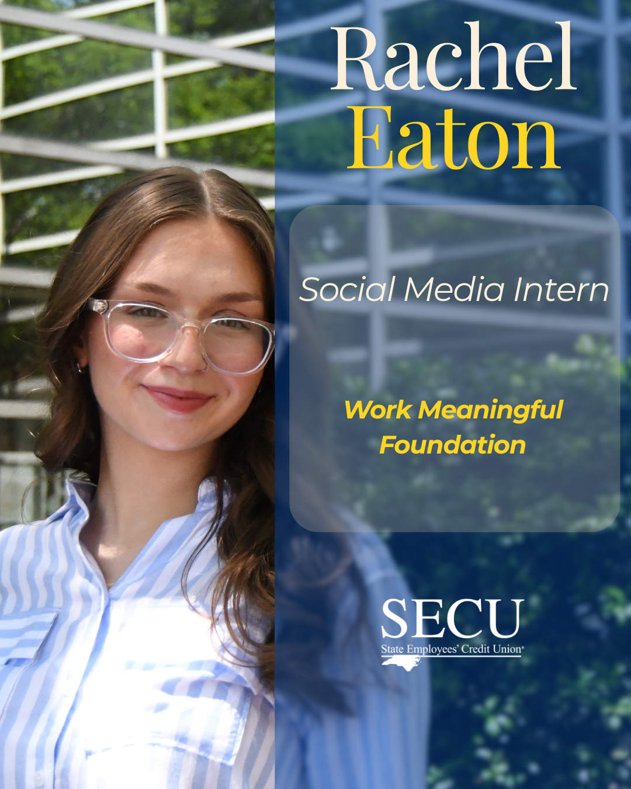

SECU Public Fellows Campaign
A multi-phase marketing campaign for the SECU Public Fellows Internship Program at UNC Charlotte, focused on increasing awareness, applications, and student engagement.
Overview
Role & Scope
I planned and executed a multi-phase marketing campaign for the SECU Public Fellows Internship Program, focused on increasing awareness, clarifying program value, and driving student applications. My work included campaign planning, cross-channel content development, and student-facing creative across print and digital formats. I created materials that introduced the program, supported deadline-driven application pushes, and helped make the experience feel more tangible through intern storytelling and branded visual assets.
Strategy
The campaign followed a phased structure designed to move students from awareness to action. Messaging evolved from program introduction, to application urgency, to authentic student storytelling that reinforced credibility and outcomes.
Audience
UNC Charlotte students exploring internship opportunities.
Goal
Increase awareness, clarify program value, and drive completed applications.
Approach
Structured timeline + cross-platform content deployment.
Campaign Breakdown
Phase 1 — Awareness
Intro campaign content explaining the program, highlighting benefits, and building early excitement.

Recruitment-focused print/digital flyer to introduce the program and key details.

Digital signage version for high-traffic campus screens (quick message + QR).

Visual used in email/announcement messaging to keep the look consistent across channels.
Phase 2 — Application Push
Deadline-driven messaging focused on getting students to start and submit applications.

Urgency-driven messaging highlighting application deadline with swipe-up CTA.

Reinforced deadline messaging and clear application instructions.

Compact print piece distributed across campus to drive last-minute applications.
Intern Spotlight Content
To humanize the SECU Fellows Program, I developed a multi-format intern spotlight series combining branded profile graphics with short-form Day in the Life reels. The goal was to make outcomes tangible and relatable for future applicants.

Spotlight series intro.

Canva-designed profile highlight.

Canva-designed profile highlight.
Short-form highlight of the intern’s role and environment.
Another example of quick storytelling and editing.